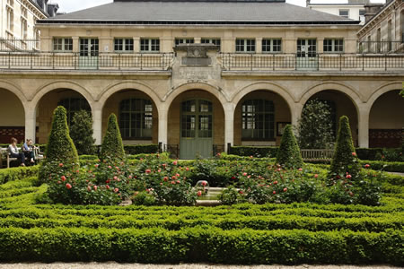

|
BIENVENUE!
| 
|
Le lycée Louis-le-Grand est un établissement public d'enseignement.Il comprend le lycée proprement dit (800 élèves) et les classes préparatoires (900 étudiants). Fondé en 1563, il est situé au coeur du Quartier latin. Le Quartier latin est le quartier étudiant traditionnel de Paris.
Riche en Histoire, en Architecture, en Culture, ce quartier regroupe les plus anciens et les plus prestigieux établissements d'enseignement français (la Sorbonne, le Collège de France).
|
Louis-le-Grand, lycée d'excellence, constitue un élément de premier plan dans la formation des élites françaises. Les anciens élèves devenus hommes d'État, diplomates, prélats, maréchaux de France, académiciens, hommes de lettres ne se comptent pas. «Le collège des jésuites à Paris», écrira Élie de Beaumont en 1862, «est depuis longtemps une pépinière de l'État, la plus féconde en grands hommes». Ainsi l'on pourrait citer Molière, Voltaire, Hugo, tous écrivains célèbres et tous anciens du lycée. De même Pompidou, Giscard d'Estaing, Chirac, tous présidents de la Cinquième République et tous issus des classes de Louis-le-Grand.
|